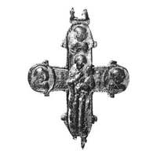

Catalog › CE-0663 · KOR2003-II.1.1.42
Valvă de revers de encolpion în stare proastă, cu Maica Domnului Odighitria și sfinți în medalioane
sec. XIII (1201–1300) · Kiev (în fața Bisericii Zeciuielii), Ucraina · Muzeul de Istorie de Stat, Moscova (GIM), inv. 25785, оп. 1977В/1
single valve of a reliquary cross, aramă; c. XIII (1201–1300); found at Kiev (în fața Bisericii Zeciuielii), Ucraina; kept at Muzeul de Istorie de Stat, Moscova (GIM).


Identificare
- Categorie
- Valvă izolată
- Material
- Aramă
- Tehnică
- Turnare în relief; Gravare (incizie)
- Stare
- Fragmentară
- Dimensiuni
- Î 76 × L 67 mm
Iconografie
- Revers
- Maica Domnului cu Pruncul
- Descriere revers
- Valvă de revers cu capete rotunjite, de conservare proastă: multiple străpungeri pe ramura verticală, balamaua stângă de jos ruptă, metal scurs în colțurile crucii; «lacrimile» laterale scurte, slab marcate. Pe interior se văd bine adânciturile ce repetă imaginile exterioare. În centru Maica Domnului Odighitria, la trei capete imagini frontale ale sfinților în medalioane; toate imaginile sunt puternic șterse. Marginile medalioanelor și perimetrul crucii sunt conturate cu o linie în relief ce, după fragmentele păstrate, imita sârma filigranată.
Datare și atribuire
- Datare
- sec. XIII (1201–1300)
- Centru
- Necunoscut
- Tipologie
- Korzukhina–Peskova 2003, tip II 1 1
Descoperire
- Localitate
- Kiev (în fața Bisericii Zeciuielii)
- Țară
- Ucraina
- Context
- Colecție (fără context)
Păstrare și referințe
- Colecție
- Muzeul de Istorie de Stat, Moscova (GIM)
- Nr. inventar
- 25785, оп. 1977В/1
- Bibliografie
- G. F. Korzukhina, A. A. Peskova, Древнерусские энколпионы. Нагрудные кресты-реликварии XI–XIII вв., Sankt-Petersburg, 2003 [Korzukhina–Peskova 2003], p. 66, cat. nr. II 1 1/42, reprodusă la Табл. 19 (planșe, p. 261).
- Figura
- Табл. 19
- Planșe
- Korzukhina–Peskova 2003, Табл. 19 (planșă fără paginație proprie în PDF; p. 261 tipărită)
- Observații
- Datare după Peskova: sec. XIII. Proveniență în colecție: cumpărat de la N. F. Beleașevski. Inscripțiile nu s-au păstrat. Coordonate: nu sunt date în sursă.
Citare: Corpus Encolpiorum, CE-0663, Valvă de revers de encolpion în stare proastă, cu Maica Domnului Odighitria și sfinți în medalioane, https://vitaliejosanu1979-ux.github.io/primul-meu-proiect/piese/KOR2003-II.1.1.42/ (accesat 2026-10-17).